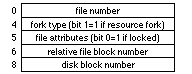
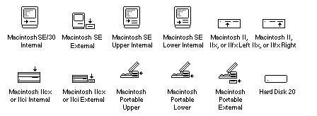
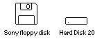
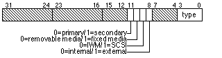
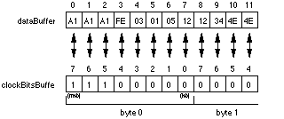
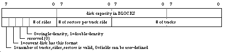
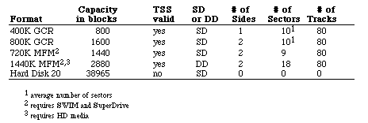
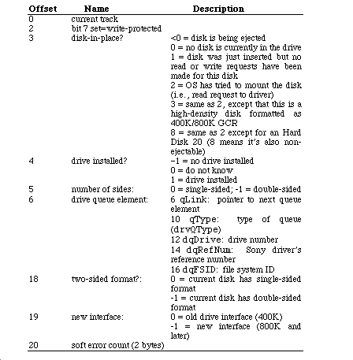

|
|
This Technical Note discusses the Sony driver control and status calls that are
available on the Macintosh.
Updated: [May 01 1990]
|
New Driver Calls
This Note covers the external (software) interface to the Sony 3.5" floppy disk
and Hard Disk 20 driver. It describes all the new calls, including those for
Modified Frequency Modulation (MFM) driver versions. This discussion assumes a
general understanding of the operation of Macintosh drivers. As all of these
calls are not available on all Macintosh models, the following table shows
which calls are available on which models:
All Read, Write, Kill, Eject, Set Tag Buffer, Drive Status
128K and later ROMs Verify Disk, Format Disk, Track Cache Control, Return
Physical Drive Icon
256K and later ROMS Return Media Icon, Return Drive Info
SuperDrive equipped Return Format List
IIfx only Diagnostic Raw Track Dump
Back to top
Prime (Read & Write) Calls
Read and write calls to Macintosh drivers are described in general in Inside
Macintosh, Volume II, The Device Manager, but for completeness, this
discussion also includes them. The Device Manager prime routines expect to
have the following fields set up in the I/O parameter block:
ioCompletion pointer to a completion routine (asynchronous calls) or
NIL (synchronous calls)
ioVRefNum drive number (for device calls) or volume reference number (for
file system calls)
ioRefNum driver's reference number (-5 for floppy disks or -2 for Hard Disk 20)
ioBuffer pointer to the location in memory where data is read to or written from
ioReqCount number of bytes to read from or write to the disk
ioPosMode tells what the absolute starting point is: beginning, end, or
current location (bit 6 is set to 1 to do a read-verify instead of a read)
ioPosOffset offset in bytes relative to the starting point in ioPosMode
When you make a call to the Sony driver's prime routine, register A0
points to this I/O parameter block and register A1 points to the
driver's Device Control Entry (DCE). The Device Manager sets the ioTrap field of
the parameter block to either $A002 for a read request or $A003 for a write request, so the driver
can determine the appropriate action. The Device Manager also sets the dCtlPosition field
of the driver's DCE to the starting byte offset relative to the beginning of the disk.
You can call the Sony driver either synchronously or asynchronously; however,
making an immediate "mode" call to the driver causes it to bomb. The driver
begins a read or write request, returns control to the caller (either the user
(asynchronous) or the Device Manager (synchronous)), then completes the request
asynchronously at the interrupt level. When the request is completed or
aborted, the driver returns one of the following result codes:
noErr0 no error
wPrErr-44 diskette is write protected
paramErr-50 some of the requested blocks are past the end of the disk or
ioReqCount is not an even multiple of 512 bytes
nsDrvErr-56 no such drive number
noDriveErr-64 drive not installed
offLinErr-65 read or write request made to an ejected disk
noNybErr-66 could not find five nibbles in 200 tries (Group Coded
Recording (GCR)) or byte timeout (MFM)
noAdrMkErr-67 could not find a valid address mark
dataVerErr-68 read verify compare failed
badCkSmErr-69 address mark checksum was incorrect
badBtSlpErr-70 one of the address mark bit slip nibbles was incorrect (GCR)
noDtaMkErr-71 could not find a data mark header
badDCkSum-72 bad data mark checksum
badDBtSlp-73 one of the data mark bit slip nibbles was incorrect (GCR)
wrUnderRun-74 could not write fast enough to keep up with the IWM
cantStepErr-75 step handshake failed during seek
tk0BadErr-76 track zero detect sensor does not change during a head recalibration
initIWMErr-77 unable to initialize IWM
twoSideErr-78 tried to read a double-sided disk on a single-sided drive
spdAdjErr-79 unable to correctly adjust the drive speed (GCR, 400K drives only)
seekErr-80 wrong track number read in a sector's address field
Back to top
Control Calls
Control calls perform all of the operations not related to reading from or writing to a
particular disk associated with this driver. The control opcode is passed to the driver in the
csCode field of the I/O parameter block (byte 26). Control calls which return information
do so by passing it back, starting at the csParam field of the I/O parameter block (byte 28).
Following is a description of each control operation with any result codes it returns.
Kill I/O (csCode=1)
Kill I/O is called to abort any current I/O request in progress. The Sony
driver does not support this control call and always returns a result code of -1.
Verify Disk (csCode=5)
Verify Disk reads every sector from the selected disk to verify that they all
have been written correctly. If any sector is found to be bad, it aborts
immediately and returns one of the following error codes:
noErr0 no error
controlErr-17 verify failed (Hard Disk 20 only)
nsDrvErr-56 no such drive number
noDriveErr-64 drive not installed
noNybErr-66 various read errors
badDBtSlp-73 bad data bit slip error
cantStepErr-75 step handshake failed during seek
initIWMErr-77 unable to initialize IWM
pdAdjErr-79 unable to correctly adjust disk speed
verErr-84 track failed to verify
Format Disk (csCode=6)
If the selected disk is a floppy disk, Format Disk writes address headers and
data fields for every sector on the disk (for GCR disks only) and does a
limited verification of the format by checking that the address field of the
first sector on each track can be read. If the selected disk is a Hard Disk
20, Format Disk does not do an actual format of the media, but instead
initializes the data of each sector to all zeroes. If any error occurs
(including write-protected media), Format Disk aborts the formatting and
returns an error code.
The csParam field is used to specify the type of format to be done on
floppy disks only. In pre-SWIM versions of the driver, putting a $0001 at
csParam creates a single-sided disk, while a non-$0001 value (usually
$0002) creates a double-sided disk. In the SWIM and later versions, this value
is an index of a list of possible formats for the given hardware and disk
combination (see the Return Format List (csCode = 6) status call for values).
noErr0 no error
controlErr-17 format failed (Hard Disk 20 only)
wPrErr-44 disk is write-protected
paramErr-50 format type is out of range
nsDrvErr-56 no such drive number
noDriveErr-64 drive not installed
noNybErr-66 various read errors
badBtSlpErr-70 ...
wrUnderRun-74 write underrun occurred
cantStepErr-75 step handshake failed during seek
initIWMErr-77 unable to initialize IWM
spdAdjErr-79 unable to correctly adjust disk speed
fmt1Err-82 cannot find sector zero after track format
fmt2Err-83 cannot get enough sync between sectors
noIndexErr-83 timed out waiting for drive's index pulse (MFM only)
Eject Disk (csCode=7)
Eject Disk ejects the disk in the selected drive if that drive supports
removable media. Since Hard Disk 20 drives are not removable, if one is
ejected, the driver posts a diskInserted event so that the operating
system remounts the drive.
noErr0 no error
nsDrvErr-56 no such drive number
noDriveErr-64 drive not installed
cantStepErr-75 step handshake failed during seek
tk0BadErr-76 track zero detect does not change during head recalibration
initIWMErr-77 unable to initialize IWM
Set Tag Buffer (csCode=8)
If csParam is zero, then no separate tag buffer is used. If
csParam is non-zero, it is assumed to contain a pointer to a buffer
where tag bytes from each block are read into or written from on each prime
call. Every time a block is read from the disk, the 12 tag bytes are copied
into the file tags buffer at TagData+2 ($2FC) and then into the user's
tag buffer. When a block is written, tag bytes are copied into the file tag
buffer from the user's tag buffer, and then written to the disk with the rest
of the block. The position of a particular block's tag bytes in the user tag
buffer is determined by that block's position relative to the first block read
or written on the current prime call. The file tags for GCR disks
include information that a scavenging utility could use to rebuild a disk if
the directory structure were trashed. Figure 1 illustrates the tags. For more
detailed information about tag buffers, refer to Inside Macintosh,
Volume II, The Disk Driver.

Figure 1 - File Tags
Track Cache Control (csCode=9)
When the track cache is enabled, all of the sectors on the last track accessed
during a read request are read into a buffer in RAM. The sectors that were
actually requested are also returned in the user's buffer. On future read
requests, if the track is the same as the last read track, the sector data is
read from the cache instead of the disk. Write requests to the driver are
passed directly to the disk, and any of the sectors written that are in the
cache are marked invalid. Two bytes are passed at csParam to control
the cache:
csParam csParam+1
=0: disable the cache <0: remove the cache
!=0: enable the cache =0: do not remove or install
>0: install the cache
When the cache is removed, 680x0 register D0 contains the previous
size of the cache.
noErr0 no error
memFullErr-108 not enough room in heap zone to install track cache
Return Physical Drive Icon (csCode=21)
This call returns a pointer to an icon describing the selected drive's physical
location. The supported drive icons are shown in Figure 2. Note that only the
icons for a particular machine are included in that version of the driver. The
Hard Disk 20 icon is in the drive's ROM, so it is available only when a Hard
Disk 20 is connected.

Figure 2 - Physical Drive Icons
noErr0 no error
controlErr-17 icon does not exist or is not available (Hard Disk 20 only)
nsDrvErr-56 no such drive number
noDriveErr-64 drive not installed
Return Media Icon (csCode=22)
Return Media Icon returns a pointer to an icon for the selected drive's media
type. The Sony floppy disk icon is stored in the driver, while the Hard Disk
20 icon is retrieved from the drive's ROM.

Figure 3 - Media Icons
noErr0 no error
controlErr-17 icon does not exist or is not available (Hard Disk 20 only)
nsDrvErr-56 no such drive number
noDriveErr-64 drive not installed
Return Drive Info (csCode=23)
Return Drive Info returns a 32-bit value in csParam that describes the
location and attributes of the selected drive.

Figure 4 - Return Drive Info in csParam
As illustrated in Figure 4, most of the bits of this returned value are
currently not used and left open for future expansion. The drive type field
occupies bits zero to three and describes the kind of drive that is connected.
Currently six different "types" are supported:
0 no such drive
1 unspecified drive
2 400K Sony
3 800K Sony
4 SuperDrive (400K/800K GCR, 720K/1440K MFM)
5 reserved
6 reserved
7 Hard Disk 20
The attributes field occupies bits 8 to 11 and describes the location (internal
or external, primary or secondary), drive interface (IWM or SCSI), and media
type (fixed or removable).
noErr0 no error
nsDrvErr-56 no such drive number
noDriveErr-64 drive not installed
Diagnostic Raw Track Dump (csCode=18244)
This control call reads all or part of a track and returns the raw data it
finds so applications can access a floppy disk at a very low level without
having to directly access the hardware. This call is available in the ROM of
the Macintosh IIfx. An application should check for the presence of this
call, and if it's not available, either bail out or find another way to read
the raw data. If you make the call and it is not supported on the machine,
then it returns with a -17 controlErr. This call is needed since the
SWIM chip is not going to be directly addressable in the future. The
following parameters are passed starting at csParam:
+0 clockBitsBufferlongint pointer to packed bit array (MFM disks
only), or NIL
+4 dataBufferlongint pointer to raw track data, or NIL
+8 byteCountlongint number of bytes requested (dataBuffer must be
able to hold this many bytes)
+12 numDone longint number of bytes actually read (<=byteCount)
+16 searchMode word when to start collecting bytes:
0 = as soon as spindle motor is up to speed
1 = after reading an address field
2 = after reading a data field
3 = at the index mark (MFM disks only)
+18 track word which track to read (0-79)
+20 side byte which side to read (0-1)
+21 sector byte which sector to synchronize on (GCR=0-8,9,10,11;
MFM=1-9 or 1-18); however, any value
If clockBitsBuffer is not NIL, it points to a buffer that
must be at least one-eighth the size of dataBuffer. It consists of an
array of bits signifying whether or not the corresponding byte in
dataBuffer is a mark or data byte. If a bit is equal to one, the byte
is an MFM mark byte, but if it is equal to zero, the byte is an MFM data byte.
The relationship between bits in clockBitsBuffer and dataBuffer is
shown in Figure 5. The example shows a typical MFM address field.

Figure 5 - clockBitsBuffer versus dataBuffer
Note: If both clockBitsBuffer and dataBuffer are
NIL, the call does nothing. This provides a way for applications to
determine if the call exists without first having to allocate large buffers.
Note: The clockBitsBuffer has random data in it for GCR disks,
but the dataBuffer has valid information.
ByteCount specifies the number of raw bytes to read. It may not be
possible to read that many bytes on every Macintosh due to differences in the
way that the hardware and software are implemented, so the call returns the
number of bytes that were actually read in numDone. If
byteCount is zero, the call does nothing.
SearchMode specifies when to begin actually collecting bytes. The first
case (0) implies that the location where reading begins is somewhat random.
Cases 1 and 2 begin reading bytes as soon after the end of an address or data
field as possible. If the read is done on an MFM disk, the call resynchronizes
and begins reading at the next mark byte that follows a sync field. The last
case synchronizes with the drive's index signal and then begins reading as soon
as it sees a mark byte that follows a sync field.
The track, side, and sector fields are
self-explanatory. Of course, the sector number is not needed or used when
searchMode is either 0 or 3.
noErr 0 no error
controlErr -17 this call is not supported on the host Macintosh
paramErr -50 one or more of the parameters is out of range
nsDrvErr -56 no such drive number
noDriveErr-64 drive not installed
offLinErr-65 read or write request made to an ejected disk
noNybErr-66 could not find five nibbles in 200 tries (GCR) or byte timeout (MFM)
noAdrMkErr -67 could not find a valid address mark
badCkSmErr -69 address mark checksum was incorrect
badBtSlpErr -70 one of the address mark bit slip nibbles was incorrect (GCR)
noDtaMkErr -71 could not find a data mark header
badDCkSum -72 bad data mark checksum
badDBtSlp -73 one of the data mark bit slip nibbles was incorrect (GCR)
cantStepErr -75 step handshake failed during seek
twoSideErr -78 tried to read a double-sided disk on a single-sided drive
spdAdjErr -79 unable to correctly adjust the drive speed (GCR, 400K drives only)
eekErr -80 wrong track number read in a sector's address field
sectNFErr -81 sector number never found on a track
noIndexErr -83 timed out waiting for index signal
Back to top
Status Calls
The Sony driver currently supports three status calls, which are described in
this section. As with the control calls, the status opcode is passed to the
driver in the csCode field of the I/O parameter block (byte 26). The
returned status information is passed back starting at the csParam
field of the I/O parameter block (byte 28).
Return Format List (csCode=6)
Return Format List is only supported in SWIM or later versions of the Sony
driver, whether or not MFM disks are supported. It returns a list of all
possible disk formats that are supported with the current combination of disk
controller, drive, and media. On entry, csParam contains a value
specifying the maximum number of formats to return (refer to Technical Note
#262, Controlling Status Calls, for more information), and csParam+2
contains a pointer to a table which contains the list. On exit, csParam contains the
number of formats returned (no more than specified) and the table contains the list of formats.
If no disk is inserted in the drive, the call returns a noDriveErr code. The format
information is given in an eight-byte record as shown in Figure 6.

Figure 6 - Format Information From Return Format List
If a track, side, or sector field is zero when the
TSS valid bit is set to one, that field is considered to be a "don't care" as
far as describing the format of the disk. When the TSS valid bit is zero, the
track, side, and sector fields may be driver-defined.
The formats supported by the driver are as follows:

noErr0 no error
paramErr-50 error in user's parameter list
nsDrvErr-56 no such drive number
noDriveErr-64 drive not installed
Drive Status (csCode=8)
Drive Status returns information about a particular drive starting at
csParam. Drive Status returns only a noErr (0) message.

Back to top
References
Inside Macintosh, Volumes II, IV & V, The Disk Driver
Technical Note M.DV.HLControlAndStatus -- Controlling Status Calls.
Back to top
Change History
|
01-April-1990
|
Originally written.
|
|
01-May-1990
|
Corrected Figure 2, since the Return Physical
Drive Icon (csCode = 21) returns an error message instead of an icon
on the Macintosh Plus.
|
Back to top
Downloadables
|

|
Acrobat version of this Note (292K)
|
Download
|
Back to top
|